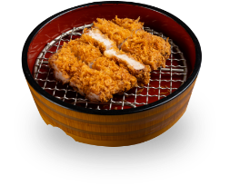
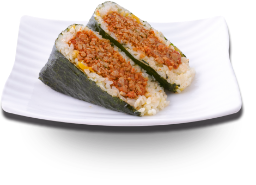
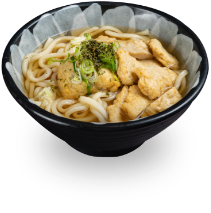
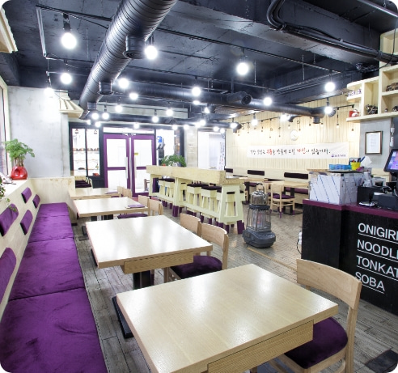
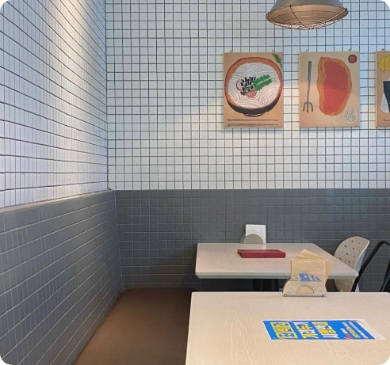
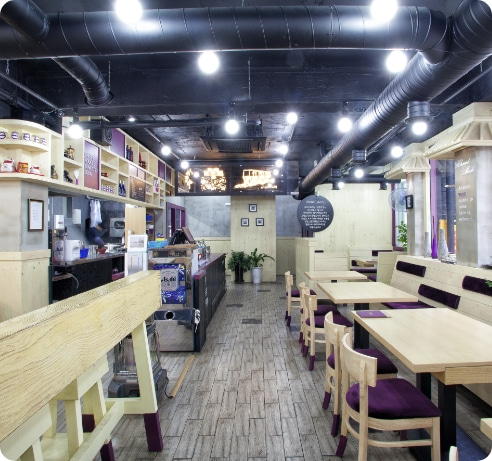

유리카모메
칙칙폭폭, 어디서 맛있는 소리 안나요?
무인 전동차에서 시작된 맛있는 기적!
기차역에서 잠시 맛봤던 맛을 잊지 못해 떠난 분들이 다시 걸음 하게 된다는
만화같은 이야기. 이것이 바로 '유리카모메'의 시작입니다.
꼭 먹어봐야 하는 대표메뉴
가장 자신있는 대표메뉴를 소개합니다.
-

기차역에서 맛봤던 바삭한
돈까스 -

기차역에서 맛봤던 추억의
오니기리 -

기차역에서 맛봤던 따뜻한
우동
유리카모메 성공의 조건!
성공할 수 밖에 없는 조건을 직접 확인해보세요
-
01
빠르다
최고의 회전율 -
02
맛있다
엄선된 재료와 노하우 -
03
쉽다
교육을 통한 조리가능성 실현
업계 최고의 경영관리 지원시스템을 바탕으로 수많은 성공 가맹점을 탄생시킨
유리카모메는 뛰어난 맛과 품질의 우수성을 바탕으로 강력한 브랜드 파워를 구축해 나가고 있습니다.
그때 그 감성, 유리카모메
유리카모메의 인테리어를 감상해보세요.


